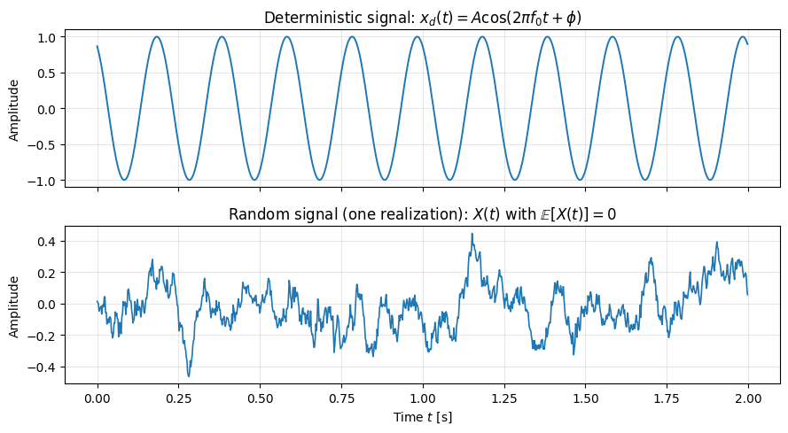

import numpy as np
import pywt
import matplotlib.pyplot as plt
import imageio
from scipy import signal
# 1. Generate a sample noisy signal
np.random.seed(0)
t = np.linspace(0, 1, 500)
original_signal = signal.sawtooth(2 * np.pi * 5 * t) # Original signal
noise = np.random.normal(0, 0.5, t.shape)
noisy_signal = original_signal + noise # Noisy signal
# 2. Define wavelet and apply wavelet transform
wavelet = "db4" # Daubechies wavelet
coeffs = pywt.wavedec(noisy_signal, wavelet, level=5)
# 3. Denoising by thresholding coefficients
threshold = 0.3 # Set threshold for denoising
coeffs_thresholded = [pywt.threshold(c, threshold * max(c)) for c in coeffs]
# 4. Initialize list for frames
frames = []
# 5. Reconstruct the signal at each thresholding level and save each frame
for i in range(1, len(coeffs_thresholded) + 1):
# Zero out coefficients above level i
coeffs_temp = coeffs_thresholded[:i] + [
np.zeros_like(c) for c in coeffs_thresholded[i:]
]
denoised_signal = pywt.waverec(coeffs_temp, wavelet)
# Plot the original, noisy, and partially denoised signal
fig, ax = plt.subplots(figsize=(8, 4))
ax.plot(t, noisy_signal, label="Noisy Signal", color="gray", alpha=0.6)
ax.plot(t, original_signal, label="Original Signal", color="black", linestyle="--")
ax.plot(t, denoised_signal, label=f"Wavelet Denoising (Level {i})", color="blue")
ax.legend()
ax.set_title(f"Wavelet Denoising Progression - Level {i}")
ax.set_xlabel("Time")
ax.set_ylabel("Amplitude")
# Save frame as image in memory
fig.canvas.draw()
image = np.frombuffer(fig.canvas.tostring_rgb(), dtype="uint8")
image = image.reshape(fig.canvas.get_width_height()[::-1] + (3,))
frames.append(image)
plt.close(fig) # Close figure to save memory
# 6. Save frames as a GIF
imageio.mimsave("wavelet_transform_denoising.gif", frames, fps=2)
print("GIF saved as 'wavelet_transform_denoising.gif'")import numpy as np
import pywt
import matplotlib.pyplot as plt
# Generate a synthetic signal with features
np.random.seed(0)
t = np.linspace(0, 1, 500)
signal = np.sin(2 * np.pi * 5 * t) # Base signal (5 Hz)
signal[100:120] += 2 # Add a spike (feature at t=0.2)
signal[300:320] -= 1.5 # Add another feature (t=0.6)
# Perform wavelet decomposition (using Daubechies 4 wavelet)
wavelet = "db4"
max_level = 5 # Maximum decomposition level
coeffs = pywt.wavedec(signal, wavelet, level=max_level)
# Plot the original signal with features
plt.figure(figsize=(10, 6))
plt.subplot(3, 1, 1)
plt.plot(t, signal, label="Original Signal with Features", color="black")
plt.title("Original Signal")
plt.xlim(0, 1)
plt.xlabel("Time")
plt.ylabel("Amplitude")
plt.legend()
# Plot the wavelet transform coefficients at different levels
for i in range(1, max_level + 1):
plt.subplot(3, 2, i + 1)
# Plot detail coefficients for the current level
# Zero out other levels to highlight the current level's detail coefficients
coeffs_temp = [
coeffs[0] if j == 0 else np.zeros_like(coeff) for j, coeff in enumerate(coeffs)
]
coeffs_temp[i] = coeffs[i] # Keep the detail coefficients for level i
# Reconstruct the signal using only the current level's details
feature_detection = pywt.waverec(coeffs_temp, wavelet)
plt.plot(
t,
feature_detection[: len(signal)],
label=f"Level {i} Feature Detection",
color="red",
)
plt.title(f"Detected Features - Level {i}")
plt.xlim(0, 1)
plt.xlabel("Time")
plt.ylabel("Amplitude")
plt.legend()
plt.tight_layout()
plt.show()
import matplotlib.pyplot as plt
import numpy as np
# Configuración del vector
vx, vy = 4, 3 # Componentes del vector
# Crear la figura y los ejes
fig, ax = plt.subplots()
# Dibujar los ejes
ax.axhline(0, color="black", linewidth=0.5)
ax.axvline(0, color="black", linewidth=0.5)
# Dibujar el vector
ax.quiver(
0,
0,
vx,
vy,
angles="xy",
scale_units="xy",
scale=1,
color="blue",
)
# Dibujar el vector con estilo de línea punteada
ax.plot([0, vx], [0, 0], "k--") # Línea punteada para el vector
ax.plot(vx, 0, "ko") # Punto en el extremo del vector
ax.plot([0, 0], [0, vy], "k--") # Línea punteada para el vector
ax.plot(0, vy, "ko") # Punto en el extremo del vector
# Dibujar las proyecciones en los ejes
ax.plot([vx, vx], [0, vy], "r:")
ax.plot([0, vx], [vy, vy], "g:")
# Etiquetas para las proyecciones
ax.text(vx, -0.1, r"$X_1$", ha="center", va="top")
ax.text(-0.1, vy, r"$Y_1$", ha="right", va="center")
ax.text(vx, vy, r"$(X_1, Y_1)$", ha="left", va="bottom")
ax.text(-0.3, -0.3, "O", ha="center", va="center")
# Configurar los límites de la gráfica
ax.set_xlim(-1, vx + 2)
ax.set_ylim(-1, vy + 2)
# Añadir etiquetas y leyendas
ax.set_xlabel("x")
ax.set_ylabel("y")
ax.legend()
# Configurar la cuadrícula
ax.grid(True)
ax.set_aspect("equal")
# Mostrar el gráfico
plt.show()/tmp/ipykernel_2924/1069217383.py:49: UserWarning: No artists with labels found to put in legend. Note that artists whose label start with an underscore are ignored when legend() is called with no argument.
ax.legend()